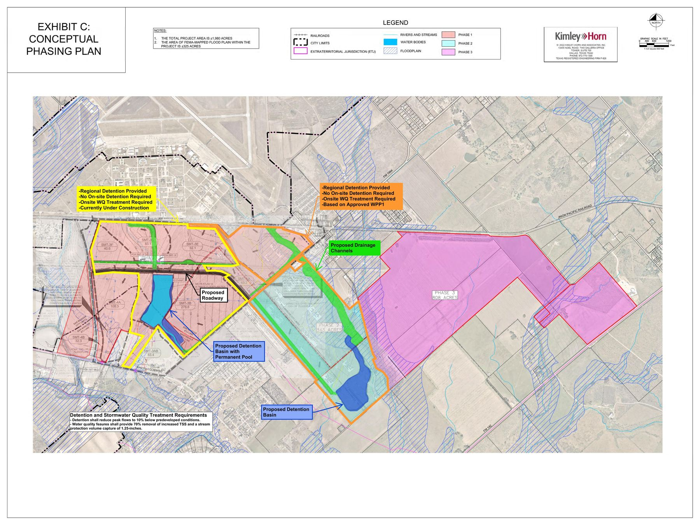

About the Project
The TriTexas Logistics Park (formerly SMART Terminal / Axis Logistics Park) is a large-scale industrial warehouse and logistics development spanning roughly 2,058 acres along FM 1984 near San Marcos, Texas. The site straddles two jurisdictions: about 741 acres have been annexed into San Marcos city limits, while the remaining ~1,300 acres sit in unincorporated Caldwell County - all of it historically within the City's Extraterritorial Jurisdiction (ETJ). The project is owned by El Paso billionaire Paul L. Foster through Franklin Mountain San Marcos I, LP - which holds all but a separate ~75-acre parcel that is not covered by the project's Development Agreement - and is being developed by Scarborough Lane Development. Phase I infrastructure - including a 1.2-mile road, water and wastewater systems, and an on-site electrical substation - was reported complete as of May 2026. No tenants have been publicly announced.

Site & Property Context
Lender: AgTrust, ACA (formerly Lone Star, ACA) - two loans totaling approximately $52.8M secured against the ~2,017-acre site.
Governing Development Agreement: First Amended & Restated SMART Terminal DA (Caldwell Co. 2023-001629, adopted Jan 17, 2023) governs FM’s ~2,017 acres. Franklin Mountain is no longer a party to the Cotton Center Development Agreement (formally removed per §2.04 of the Second Amended & Restated Cotton Center DA, executed Jun–Aug 2024).
Jurisdiction: Historically, the entire ~2,058-acre site sat within the City of San Marcos's Extraterritorial Jurisdiction (ETJ) - the original 2019 agreement is literally named the "Chapter 380 Economic Development Incentive and ETJ Development Agreement." Only about ~741 acres have actually been annexed into the city limits: Ord. 2019-01 annexed ~733.6 acres (corrected from 734.6 by a Nov 2024 survey fix), and a companion ordinance the same night, Ord. 2019-02, rezoned that same ~734.6-acre footprint to Heavy Industrial - both were originally proposed at ~934.34 acres but reduced to match at second reading. Ord. 2024-27 later annexed a separate 7.553-acre Energy Parkway road strip. A much larger 2023 annexation attempt (~619.755 acres, paired with a rezoning of ~588.821 acres to Heavy Industrial) was withdrawn by the developer before taking effect. The rest of the site remains in unincorporated Caldwell County, not zoned by the City at all. Development Agreement coverage tracks ownership, not jurisdiction: it applies to all land held by Franklin Mountain San Marcos I, LP, whether inside city limits or the county, but does not cover the separate ~72.834-acre parcel held by Franklin Mountain San Marcos 75, LP.
CAD Parcel Inventory (2026 Tax Year - Caldwell County Appraisal District)
Combined market value: ~$24.3M across 9 parcels (~2,058 ac total). All parcels carry agricultural exemptions; taxable values are a small fraction of market values.
| CAD ID | Acres | Address / Location | Market Value | Est. Tax (2026) | City of SM Tax | Owner Entity | Notes |
|---|---|---|---|---|---|---|---|
| 28002 | 762.583 | FM 1984, Maxwell | $9,761,340 | $4,316.64 | $893.08 | FM-I LP | Largest parcel; CMA-S (Martindale ETJ Release) taxing entity at $0; acquired from Texas Transportation Alliance Oct 2021 |
| 28280 | 660.503 | Valley Way Dr, Maxwell | $5,844,280 | $2,949.63 | - | FM-I LP | Core SMART Terminal parcel; Cotton Center MUD No. 1 at $0; straddles Lockhart ISD / San Marcos ISD; acquired from Tack Redwood Partners Dec 2021 |
| 27809 | 213.680 | FM 1984, Maxwell | $2,467,180 | $1,364.35 | $405.10 | FM-I LP | City of San Marcos taxing entity (confirms annexation); acquired from Texas Transportation Alliance Oct 2021 |
| 11678 | 143.444 | 10920 Hwy 142, Maxwell | $2,059,850 | $549.06 | - | FM-I LP | A188 Maxwell, Thomas survey; acquired from Best David Matthew Jul 2022 |
| 28052 | 75.000 | FM 1984, Maxwell | $1,202,440 | $358.60 | - | FM-75 LP | Held by separate entity (Owner ID 242650); acquired from Maxwell Acres Co. & Kasch Apr 2024. Not a party to the 2023 Development Agreement. |
| 28119 | 130.296 | Quail Run Rd, Martindale | $1,580,890 | $839.75 | - | FM-I LP | Barns/sheds on site; acquired from Tack Redwood Partners Jun 2022 |
| 27881 | 70.046 | 19780 San Marcos Hwy | $1,147,610 | $469.52 | $94.34 | FM-I LP | CMA-S (Martindale ETJ Release) at $0; confirms former Martindale ETJ boundary; acquired from Texas Transportation Alliance Oct 2021 |
| 27868 | 0.950 | 2862 FM 1984 | $114,090 | $1,621.54 | - | FM-I LP | Former homesite; $216K improvements removed by 2024; acquired from Van Lee LLC Mar 2022 |
| 129763 | 1.255 | Quail Run, Martindale | $121,790 | $6.08 | - | FM-I LP | "Old 24-ft county road strip"; acquired directly from Caldwell County Apr 2024 (WD 2024-002658) |
| Total | 2,057.757 | $24,299,470 | $12,475.17 | $1,392.52 | FM-I LP (8) + FM-75 LP (1) | All ag-exempt; taxable values well below market |
Reference Materials
Key Documents
Official signed versions of the 2023 Development Agreement and the April 2023 Administrative Amendment adding the 100-ft Reedville buffer and updated stormwater commitments.
Maps & Site Exhibits
Over 60 engineering exhibits, survey plats, and drainage/floodplain studies compiled from public records - roadway alignments, water quality buffers, tree preservation plans, and property surveys.
Project Timeline
Chronological record of major project milestones, government approvals, public announcements, and key decisions from inception to present.
Permitted & Prohibited Uses
The full Exhibit D Land Use Matrix from the 2023 Development Agreement - 51 permitted uses, geographic restrictions, and expressly prohibited activities. Includes note on the June 2026 data center ordinance conflict.
Prospective Businesses Summary
Overview of industrial recruitment efforts - the companies being pursued, projected investment figures, job claims, and current status of each prospect.
Research Reports
Groundwater Contamination Research
Historical contamination at Gary Air Force Base / Gary Job Corps Center and questions raised about its potential relevance to ground disturbance at the SMART Terminal site.
Impact Fees & the 2019 Freeze
How San Marcos calculates wastewater impact fees, why the City's 2026 study proposes to roughly quadruple the rate, and how SMART's frozen 2019 rate creates a ~$17.9M gap versus its own growth-driven infrastructure cost.
Key Players
Roster of 80+ identified individuals connected to the project - owners, developers, city and county officials, engineers, brokers, and legal counsel.
Ownership Structure
Corporate chain of title tracing the entities behind the project - from land ownership through development partnerships and holding companies.
Political Contributions & Regulatory Influence
Tracks campaign donations from project principals to state officials, and the regulatory bodies those officials oversee that bear on the project.